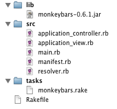

Note: If you did not run the installer script to generate your project, please skip ahead to
Monkeybars usage basics
Getting to know your project contents

The installer script creates a number of files as part of a basic Monkeybars application. This may seem excessive at first,
however, the contents of these files are separated out for good reason.
main.rb
This is the main entry point of your application. It is responsible for loading the machinery necessary to launch a JRuby
application (this involves playing with the Classpath), as well as adding any subdirectories of src onto the load path.
The main.rb file also has a section for platform specific code to be run prior to launching your application. By default
there is only one platform that performs any actions prior to running and that is OSX. Typically this is a good place to set
up a platform specific look & feel. Below the platform specific code section is where you will place your application's
code, usually a call to open a controller.
resolver.rb
This file is a utility file, it is separated out so that manifest.rb does not become cluttered. It adds the Resolver class
which is used to determine where Monkeybars is being loaded from. It also adds a method to object "add_to_classpath" which
greatly enhances the readability of loading new locations onto the classpath. This code is in not in the monkeybars jar
file as it is needed in order to resolve the location of the monkeybars jar file.
manifest.rb
The manifest.rb file is roughly analogous to the manifest file inside a jar. Its purpose is to load all of the global
assets needed by your application to start. Most often this means loading jars and directories containing .class files
onto the classpath. Because running from inside a jar and from the file system often means the relative location of
your resources changes, the Resolver class is used to conditionally load resources onto the classpath.
At the top of the file is Monkeybars specific loading code that ensures the basic components of Monkeybars is loaded. At
the bottom is a section demonstrating how to load your own resources, either by appending directly to $CLASSPATH or by using
the add_to_classpath helper method. If you built your project in Netbeans using the Matisse layout system, a typical
configuration for running your app from the command line might look like this:
case Monkeybars::Resolver.run_location
when Monkeybars::Resolver::IN_FILE_SYSTEM
# Files to be added only when running from the file system go here
when Monkeybars::Resolver::IN_JAR_FILE
# Files to be added only when run from inside a jar file
add_to_classpath "../build/classes" #location where Netbeans places compiled .class files
add_to_classpath "../lib/swing-layout-1.0.3.jar" #needed to run layouts created using "Free Design"
end
Following this section would be a good place to put in any normal require statements that are used by your application.
Use in testing
The manifest.rb file serves a secondary purpose in providing a file that can be required to set up all the necessary files
for tests to run. In this manner each of your tests (or your test task in your Rakefile) could require manifest.rb and
have all the necessary classes loaded in order to begin executing tests.
application_controller.rb and application_view.rb
These files serve as base files for your application's various controllers and views. Any generated controllers or views
will be created inheriting from the appropriate base class. This provides a convenient location to place any methods to
be shared across controllers or views.
monkeybars.rake
The tasks directory is created as a location to put additional rake plugins that your project uses. All of the Monkeybars
rake tasks are included in this file and the provided Rakefile includes all .rake files in the tasks directory by default.
Continue to the next section: Using the generator or learn about setting up your new project in Netbeans.